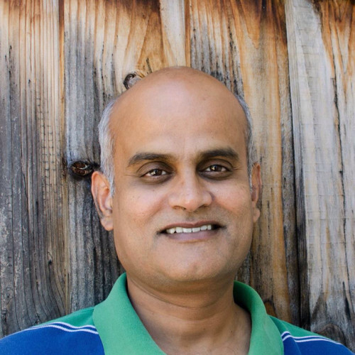

Dinesh.Gaitonde@gmail.com
mobile: +1 408-xxx-xxxx
Citizenship: USA
# Dinesh Gaitonde
## Executive Summary
* Over 20 years experience in the semiconductor industry
* Several patents and publications in
* FPGA Fabric and NoC Architecture
* EDA algorithms for physical design in ASICs and FPGAs
* Static Timing Analysis, Delay Calcuation
* Performance Evaluation of fabric and fabric adjacent SoC blocks
## Working Experience
#### AMD (Senior Fellow, 2022/06 - present)
* Next Generation Fabric Architectures – Microarchitecture and performance evaluation
* Reducing pessimism in methodologies to squeeze more PPA from products
* Extending performance evaluation to more heterogenous platforms and newer workloads
* Toolchains to manage the heterogenous integration at device and package levels of next gen platforms
* Define market leading product offerings at next generation in terms of PPA
* Align architectures with future algorithm and other tool capabilities
* Predict architecture capabilities with better accuracy, and close the loop with product deliverables
* Permit competitive use of FPGAs in more domains via heterogenous integrations
#### Xilinx (Distinguished Engineer, 2015/01 - 2022/06)
* Managed team responsible for AMD/Xilinx FPGA architectures since Virtex7 (28nm)
* Led team of 5 for application development
* Coordinated with developers, support staff and vendors across Hong Kong, China, Taiwan
#### Xilinx (Principal Engineer, 2005/08 - 2015/01)
#### Synopsys (Sr. Staff Software Engr, 2003/10 - 2005/08)
* Part of the original team for physically aware synthesis - DC-Topo product
#### Monterey Design Systems (MTS, 1998/04 - 2003/10)
* Placement, Physical Synthesis
* Design Analysis
#### Motorola Inc. (Staff Software Engineer, 1995 - 1998)
* Power estimation and optimization
* Library characterization
* Delay calculation
* Static noise analysis
## Projects:
* [Casual-Markdown](https://github.com/casualwriter/powerpage) - a lightweight markdown parser
* [Powerpage](https://github.com/casualwriter/powerpage) - a lightweight browser for html applications
## Education & Qualifications
* Ph.D. Electrical Engineering (Carnegie Mellon, 1995)
* Yield optimizat1ion & prediction. Design for manufacturability.
* M.Tech. Electrical Engineering (IIT Bombay, 1990)
* Worked on graph algos for efficient circuit simulation. Numerical algorithms.
* B.Tech. Electrical Engineering (IIT Bombay 1988)
## Patents & Publications
[Google Scholar Profile Link](https://scholar.google.com/citations?user=b4jzYOAAAAAJ&hl=en)